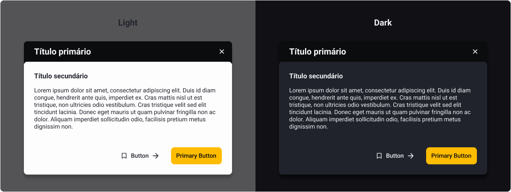
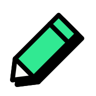
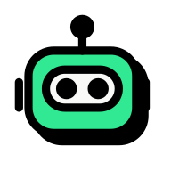
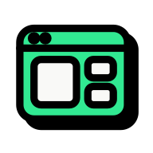
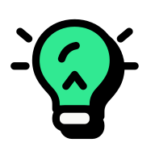
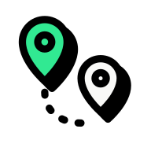

01 · Como funciona
Os componentes passaram a nascer no código
Propus que design assumisse o repositório do design system, que até então era da engenharia de front‑end. Os componentes passaram a nascer direto no código, criados com o Claude a partir de descrição e seguindo atomic design.
Não migramos as três versões de uma vez. Toda tela nova passou a nascer no sistema novo, e as antigas migram conforme são refeitas. O legado parou de crescer sem que o produto precisasse parar.
Um conjunto de título e subtítulo vira componente e entra dentro de qualquer outro, se ajustando ao que o componente pai precisa. No Modal, ele aparece duas vezes. E cada componente ganhou um arquivo MD escrito para a IA, com quando usar, comportamento e responsividade por dispositivo.

# Modal Sobreposição que interrompe o fluxo principal para mostrar uma informação ou pedir uma ação importante, como uma confirmação ou um formulário curto. ## Quando usar - A pessoa precisa decidir ou preencher algo antes de seguir. - O conteúdo extra é curto e não pede rolar a página de trás. ## Não use quando - A ação é destrutiva e só pede sim ou não. Use Confirmation Dialog. - É um aviso que não interrompe nada. Use Toast. ## Anatomia 1. Título primário, na faixa de cima, com o botão de fechar. 2. Título secundário e texto, o componente Título e subtítulo. 3. Ações, um botão secundário e um primário, nessa ordem. 4. Backdrop com 70% de transparência, sempre. ## Comportamento - A altura acompanha o conteúdo. A largura vai até 680px. - O botão de fechar é sempre o Tertiary em color‑fixed‑white. - Esc e o clique no backdrop fecham, e o foco volta para quem abriu. - As cores vêm do componente e não mudam. ## Responsividade - Mobile. Largura da tela com 16px de margem, ações empilhadas. - Tablet. Centralizado, na largura do conteúdo. - Desktop. Centralizado, até 680px.
O MD sai de uma skill de documentação, depois que o componente é aprovado, e o caminho é sempre o mesmo.

EntradaDescrição do componente
O designer descreve o que o componente faz, em vez de desenhar no Figma.

CamadaClaude e a skill de documentação
O Claude cria o componente no código, e a skill escreve o MD e pergunta o que está faltando antes de fechar.

SaídaO MD do componente
- Quando usar
- Comportamento
- Responsividade no mobile, no tablet e no desktop
02 · Governança
Qualquer área propõe e design aprova
Desenvolvedores, QAs e PMs podem propor componentes. Nenhuma proposta chega à base sem passar por design, e o caminho até lá é o mesmo para todas.

Proposta
Um componente novo, proposto por quem está construindo a tela.
Quem conduz Dev, QA ou PM

Branch de aprovação
A proposta cai numa branch só de componentes novos, fora da raiz do repositório.
Quem conduz O repositório
Aviso automático
Design é avisado automaticamente de cada proposta que chega.
Quem conduz Automação
Aprovar ou negociar
Das 10 propostas que chegaram, 4 viraram evolução de um componente que já existia, em vez de outro com a mesma função.
Quem conduz Design
Raiz do repositório
As outras 6 entraram como componentes novos, e só aí ganham o MD para a IA.
Quem conduz Design